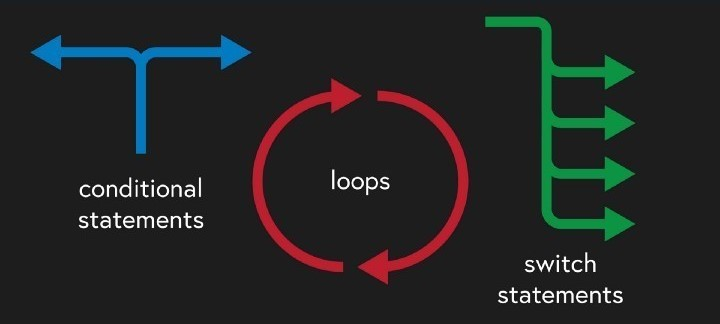
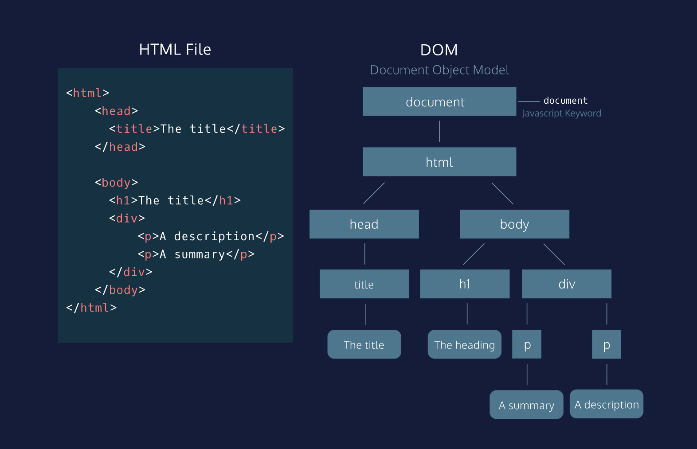
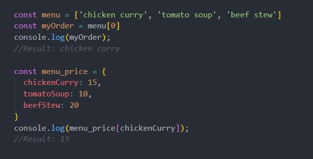
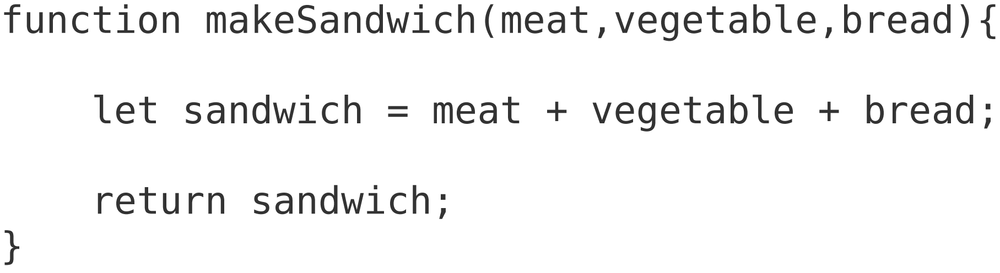

Overview
JavaScript, HTML and CSS are three main components that make up a webpage. HTML defines the structure and content of the page. CSS defines the layout and formatting of the content. JavaScript make the elements interactive.
They work together like how we make food. HTML is the necessary ingredients with different hierarchies (main ingredients, supplements, seasonings, etc.). CSS is how the dishes are presented. Javascript is the instruction on how to make the dish. HTML and CSS alone are like a fruit platter. The ingredients are presented directly on the plate with no cooking involved. Fruit platters have their own function but can’t produce diverse and interesting results compared to cooking and pastry. Similarly, HTML and Javascript alone are like fried rice where you eat directly from the pan. It works, just doesn't look so nice.
Control flow and loops
Control flow is the order in which the code is executed. By default, JavaScript execute code line by line. However, there are certain statements that can change this default behaviour, allow you to skip or repeat a block of code.
Back to the cooking analogy, you can follow a recipe step-by-step. However, sometimes you can do them in different order, or skip a number of steps depend on the circumstances. For example, to make dumplings you can make everything from scratch, but "if" you have remade ingredients like the skin, you can skip that part.
Loops are the set of steps that are done repeatedly until a condition is met. Like some recipes may tell you to beat the egg until fluffy, or add 5 tablespoons of sugar. Both include doing the same thing over and over again for a fixed number of times, or until a condition is satisfied.
The DOM
The DOM (Document Object Model) defines the way a document (like HTML) is structured and how it is accessed and manipulated. I can interact with it by assigning an id to the elements in HTML, and use Javascript to identify and interact with those elements.
In the Document Object Model, documents have a logical structure which is very much like a tree; to be more precise, it is like a "forest" or "grove" which can contain more than one tree. However, the Document Object Model does not specify that documents be implemented as a tree or a grove , nor does it specify how the relationships among objects be implemented in any way. In other words, the object model specifies the logical model for the programming interface, and this logical model may be implemented in any way that a particular implementation finds convenient. In this specification, we use the term structure model to describe the tree-like representation of a document; we specifically avoid terms like "tree" or "grove" in order to avoid implying a particular implementation. One important property of DOM structure models is structural isomorphism: if any two Document Object Model implementations are used to create a representation of the same document, they will create the same structure model, with precisely the same objects and relationships.
Accessing data from arrays and objects
We access data from arrays using the indexes of the array elements. It’s like saying “Give me the first dish on the menu". Whereas we access data from objects using the keys in the key-value pairs. It’s like asking “How much is this chicken curry?” (each dish in the menu has a price). See example code below.
Functions
A function is a set of instructions that is designed to perform a particular task. Functions are useful when we need to do that task multiple times but don’t want to list all of the steps again and again. That makes the code easier to read. For example, you are instructing someone to prepare for a picnic. You need them to make 5 different sandwiches. You only needs to show them how to do one. They can based on that, make the other 4 by replacing the ingredients.
